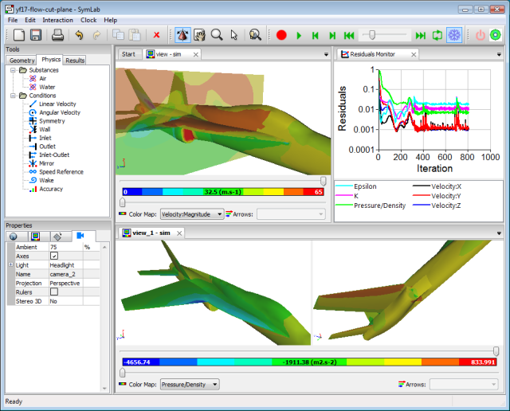

Fourth OpenFOAM Workshop 2009 Abstract
Abstract accepted for: Fourth OpenFOAM Workshop, June 1-4 2009, Montreal, Canada
Caedium: An Interactive Simulation Environment for OpenFOAM
Richard Smith, Symscape
Caedium is a CAE system designed to support CFD and other forms of analysis. The latest addition to the Caedium modular architecture is the RANS Flow add-on, which provides an interactive environment for a selection of RANS OpenFOAM solvers.
Figure 1, Caedium RANS Flow Add-On Flow Simulation.
The single unified simulation environment provided by Caedium covers the full spectrum of an analysis process from geometry through to results. Caedium is also cross platform, currently supporting Linux and Windows, based on freely available sub-systems.
All the functionality within Caedium is provided by runtime modules, even down to the geometry kernel and the graphics. This approach allows modules to be interchanged without affecting other modules. Collections of modules form 'add-ons', such as the RANS Flow add-on.
The foundation for analysis in Caedium is a solid modeling Boundary Representation (BREP) to which mesh parameters, solver controls and boundary conditions are attached. In the case of an imported mesh an equivalent BREP is reconstructed, with the mesh elements providing the geometry definition.
The Caedium RANS Flow add-on, shown in Figure 1, consists of an OpenFOAM fluid flow module and OpenFOAM import and export modules. The OpenFOAM fluid flow module is configured (e.g., what solver relates to what primary fields and boundary conditions) by resource files loaded at runtime.
Once a model within Caedium is ready for simulation, the OpenFOAM fluid flow module triggers the meshing of the associated BREP domain and then extracts the necessary parameters from the BREP (solver controls, boundary conditions etc.) to write an OpenFOAM case.
The OpenFOAM fluid flow module responds to the request from the user to start the simulation by launching an OpenFOAM solver process. While OpenFOAM is running the residuals of the primary fields can be captured and displayed in an XY plot. At user determined intervals, results (e.g., velocity magnitude contours) are extracted from the time directories created by OpenFOAM and presented to the user. The user can stop the OpenFOAM solver process at any time, adjust the solver settings (e.g., change the turbulence model) or change the boundary conditions, and resume the simulation, i.e., re-launch the OpenFOAM solver, after writing out selective portions of the OpenFOAM case.
In order to integrate OpenFOAM within the Windows version of Caedium and to appeal to as large an audience as possible I added the win32 API calls to OpenFOAM and modified the associated wmake system to support building a native version of OpenFOAM for Windows using a MinGW cross compiler on Linux. The latest version of this patch for OpenFOAM 1.5.x is freely available from the Symscape website.
My hope is that this effort to provide a unified simulation environment for OpenFOAM within Caedium can be expanded to incorporate more solvers and capabilities at the suggestion of the OpenFOAM community.
Feedback
Questions? Ideas? Problems?

Comments
Proceedings Online
The proceedings (abstracts and slides) for the 4th OpenFOAM Workshop, Montreal, Canada, June 1-4, 2009 are available at:
http://www.openfoamworkshop.org/2009/4th_Workshop/
The Presentation - SymLab: An Interactive Simulation Environment
Here's the slides I presented at the 4th OpenFOAM Workshop, 2009. Notice that it refers to Caedium's predecessor SymLab.